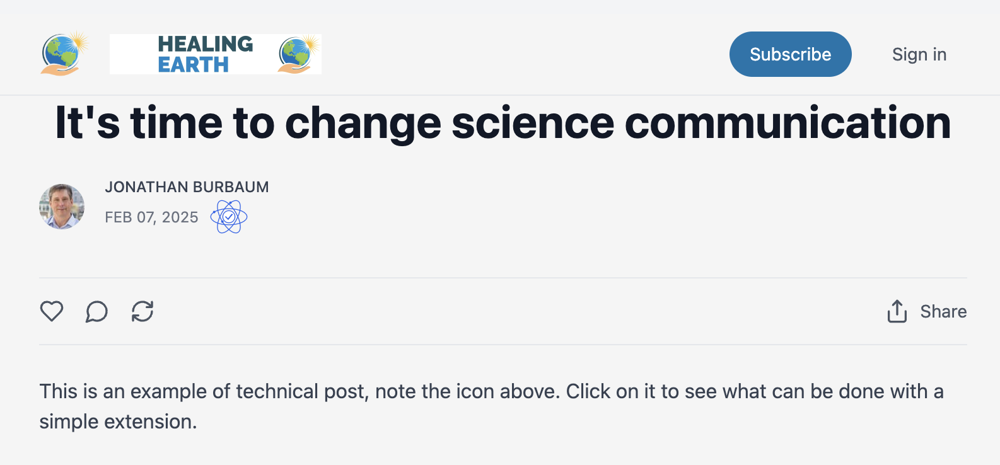

TL;DR: Scientific literature needs a modern validation architecture that enables verified scientific expertise to flow through social media while maintaining rigor and accessibility.
After publishing “ Scientific Literature is Dead, ” I realized we need solutions, not just critique—Alarmism, while rampant, is ultimately counterproductive. As regular readers know, I’ve been working on several manuscripts and contemplating how to engage with field experts in various domains. This, in turn, has led to a philosophical exploration of knowledge systems and an important realization about how we validate and share scientific knowledge in our hyper-distracted age.
→ Skip to the bottom line without the philosophy. ←
The Evolution of Scientific Literature
Scientific literature emerged as a formal system roughly 150 years ago with the establishment of journals like Nature and Science . These journals were designed in a world of slow, deliberate communication and institutional authority. Today, this system strains under unprecedented challenges: research output has exploded, peer review timelines stretch for months, and public trust in scientific institutions has eroded. Meanwhile, universities have transformed into research enterprises driven by government grants and publication metrics instead of institutions focused on teaching established knowledge. The h-index , which measures both the productivity and citation impact of a scientist's publications, has become a critical metric for career advancement, often influencing hiring and funding decisions more than the actual quality of research. This emphasis on quantitative metrics has created pressure to publish that frequently conflicts with the careful, methodical validation that scientific advancement requires.
A blockchain-based verification system could provide richer, more meaningful metrics of scientific impact. Instead of simply counting citations, it could track how research is being used and validated across different platforms and contexts - from detailed academic discussions to public policy applications. This would create a more nuanced picture of a researcher's influence and the practical impact of their work, rather than reducing their contribution to a single number.
A New Validation Architecture
A modern validation system must serve both scientists and readers in their preferred communication channels, from comprehensive platforms like Substack to concise services like Threads. Consider how a new architecture could transform impact measurement: rather than relying solely on citation counts and h-indices, a researcher's influence could be tracked through verified engagement across platforms. When sharing findings, scientists would append a verification badge with an embedded link, providing instant access to the complete foundation of their claims, credentials, and supporting evidence. Such an approach could maintain scientific rigor while adapting to contemporary communication patterns and offering more nuanced measures of research impact. This approach to maintaining scientific rigor while enabling rapid, verified sharing across platforms would be built on blockchain technology - not for tokenization or cryptocurrency, but to create an immutable scientific record where authors maintain permanent ownership of and control over their contributions while enabling verified sharing across platforms. Just as blockchain ensures the authenticity and provenance of digital assets, it can provide the foundation for scientific validation that ensures permanent, trusted records and ownership by the author.
The verification architecture should:
-
Authenticate scientific expertise through secure digital credentials
-
Create an immutable record of scientific contributions and their acceptance by peers
-
Enable seamless sharing across social media platforms
-
Provide instant access to supporting evidence and methodology
-
Maintain professional reputations through verified accomplishments.
Managing Scientific Discourse
While blockchain technology can verify credentials and establish trust, we face a crucial challenge: enabling robust scientific debate without devolving into the current abysmal state of social media discourse. The system must balance:
-
Individual control over one's scientific profile and contributions
-
Community mechanisms for raising counterpoints and concerns
-
Protection against coordinated attacks and misinformation
-
Preservation of professional discourse standards
This requires careful design of consensus mechanisms that go beyond simple voting or token-based systems. We need sophisticated reputation systems that respect expertise while remaining open to legitimate challenges.
While social media often degrades discourse quality, Wikipedia demonstrates that well-designed community systems can actually enhance content reliability. Through transparent editing, citation requirements, and community oversight, Wikipedia often achieves higher accuracy than traditional encyclopedias. This success suggests that with proper architecture and incentives, open scientific discourse could similarly maintain or even improve rigor compared to traditional peer review.
Previous Efforts
There have been earlier attempts to modernize scientific discourse, each illuminating different aspects of the challenge. PubPeer pioneered post-publication peer review but struggled to maintain discourse quality. ResearchGate and Academia.edu created scientific social networks that devolved into paper repositories without solving the validation problem. Early DeSci projects focused on tokenization economics rather than improving scientific discourse. Preprint servers like arXiv and bioRxiv demonstrated scientists' appetite for rapid sharing but lack robust validation mechanisms. Various attempts to create "Facebook for scientists" failed to gain traction, likely because they attempted to build new destinations rather than meeting scientists where they already communicate.
These efforts share common patterns of failure: they either tried to create new scientific social networks, focused too heavily on financial mechanisms, or attempted to bolt new features onto traditional publishing models. None addressed the core challenge of maintaining scientific rigor while enabling rapid, trusted communication across existing platforms.
The Path Forward
This proposed approach differs fundamentally from previous DeSci initiatives by focusing on expertise verification and discourse quality rather than tokenization. While developing this system will require financial investment, its scope is modest compared to other scientific endeavors. Creating a new pharmaceutical compound typically costs hundreds of millions of dollars, and addressing climate change effectively will require billions of dollars in investments. In contrast, building this validation architecture would require only a fraction of such funding—likely in the single-digit millions—while potentially transforming how we validate and share scientific knowledge globally.
Success requires collaboration and strategic investment in:
-
Blockchain architecture and smart contract design
-
Social media platform integration and API development
-
Scientific communication and peer review processes
-
User interface design for complex information systems
-
Community management and moderation systems
Example:
Here’s an example of how it could work (external site due to Substack restrictions):

If you share this vision of transforming scientific communication, I invite you to join this initiative or recruit your network. Whether you're a blockchain developer who can help build the verification system, a social media architect who understands platform integration, a UI/UX designer who can make complex information accessible, or an investor who recognizes the extraordinary potential return on a modest investment, your expertise and advice is valuable.
And if you know others who might be interested in contributing to or funding this transformation of scientific discourse, please share this vision with them.
Together, we can build a system that preserves scientific rigor while embracing modern communication patterns - at a fraction of the cost of traditional scientific initiatives.